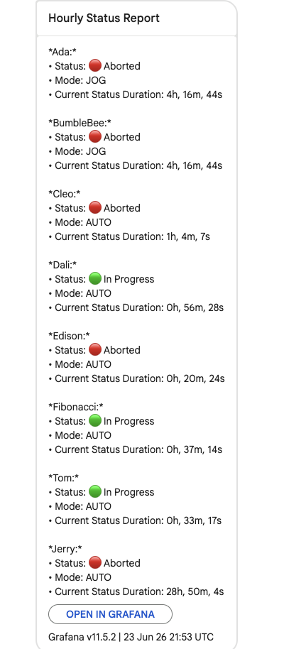
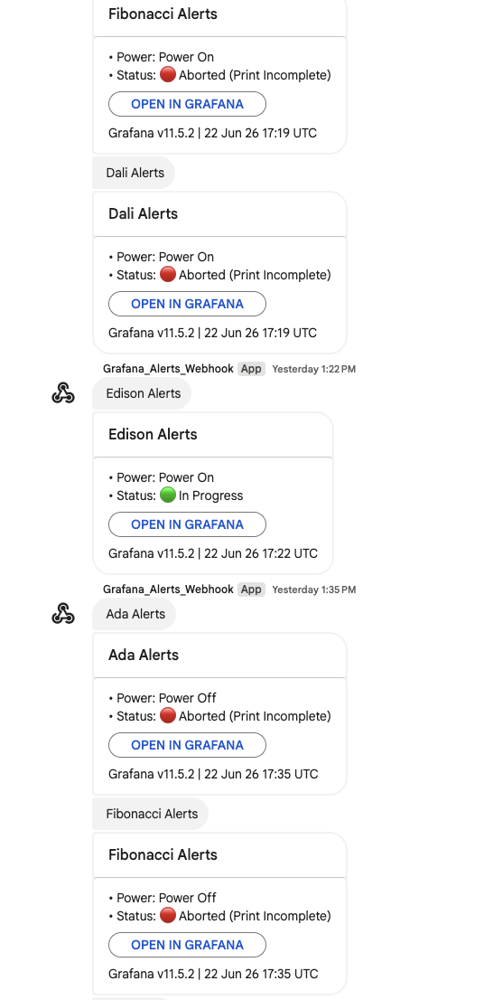

Hi, I'm Dylan Didier
Computer Science Student at Auburn University pursuing an Artificial Intelligence Certification.
I focus on solving practical engineering problems using modern backend environments, data visualization pipelines, robust hardware-software integrations, and automated systems.
Technical Stack
Languages
Python, Java, C++, SQL, JavaScript (Node.js), HTML/CSS, Bash/Shell, R, Ruby
Tools, Frameworks & Databases
Git/GitHub, Docker, ClickHouse, Grafana, REST APIs (Axios), Pandas, NumPy, GitBook
Hardware & IoT
Raspberry Pi, I2C/GPIO Protocols, CAD / 3D Modeling, Edge Computing
Core Interests
Industrial Automation, Machine Telemetry, Additive Manufacturing, Artificial Intelligence
Featured Projects
Haddy Handheld Defect Logger
Overview
Quality control on the manufacturing floor previously required operators to manage a camera, clipboard, and measuring tools simultaneously. To solve this, I engineered a custom 3D-printed smart data logger that consolidates this workflow. By pointing a targeting laser and pulling a trigger, operators can capture an image that automatically calculates defect dimensions and syncs directly to the cloud.
My Contributions
- Hardware Integration: Interfaced a high-resolution camera, Time-of-Flight (ToF) distance sensor, targeting laser, and touchscreen with a Raspberry Pi 4 using I2C and GPIO protocols.
- Mechanical Design: Designed a custom, durable enclosure using CAD software and manufactured it with high-strength ABS filament to withstand the physical demands of an industrial shop floor.
- User Interface: Developed a touchscreen GUI in Python (CustomTkinter) to allow operators to easily input material types and categorize defects on the fly.
- Image Processing & Telemetry: Wrote Python logic that utilizes ToF sensor data to calculate the exact physical dimensions of the defect. Automated a pipeline to embed a metadata footer—containing measurements, material data, and timestamps—directly onto the saved JPEG file.
- Power System & Timing: Integrated a step-down converter to power the system using hot-swappable DeWalt power tool batteries. Solved image glare by programming micro-delays to disable the targeting laser a fraction of a second before the camera shutter releases.
Results
- Streamlined a multi-step quality assurance process into a single, user-friendly point-and-shoot tool, significantly reducing logging time.
- Eliminated human error in defect measurement by automating the area calculation using real-time distance sensor data.
- Configured automated, headless cloud syncing (via Rclone) to Google Drive, giving the engineering team instant visibility into shop-floor defects.


Industrial Grafana Alerting Pipeline
Overview
Engineered a production-grade infrastructure monitoring system for industrial 3D printers. The pipeline tracks real-time machine states and connectivity, intelligently filtering out routine maintenance and delivering clean, formatted alerts directly to factory floor operators.
My Contributions & Impact
- Complex Alert Logic: Wrote ClickHouse SQL queries and advanced Grafana math expressions to catch both active machine faults and "silent disconnects" (network or power loss), completely eliminating monitoring blind spots on the floor.
- Smart Alert Suppression: Built logic to actively detect routine machine maintenance, like standard purge cycles, intelligently suppressing notifications to prevent operators from being spammed with false positives.
- Dynamic SQL Templating: Developed resilient SQL scripts for Grafana's Contact Points, transforming raw JSON data dumps into highly readable status messages (e.g., 'Power Off', '🔴 Aborted') that staff can read at a glance.
- Consolidated Communications: Replaced multiple cluttered alert rules with a single, unified data stream, drastically improving the operator experience and response times during actual machine failures.


Industrial Stack Light Edge Driver
Overview
Engineered a Node.js edge driver to control physical PATLITE signal towers mounted on large-format 3D printing robots, providing operators with real-time visual machine statuses. Following the hardware integration, I conducted a deep-dive analysis of 90 days of machine telemetry to design a high-accuracy, zero-noise alerting system for the factory floor.
My Contributions & Impact
- Hardware API Integration: Engineered a modular Node.js class to communicate with physical signal towers via REST endpoints, implementing robust async/await error handling and timeout catches for unreachable edge devices.
- Algorithm Optimization: Developed a pure function mapping dynamic machine states to hardware payload strings. Optimized array lookups using JavaScript `Set` objects to achieve O(1) constant-time channel validation, ensuring maximum execution performance.
- Two-Tiered Testing Suite: Built comprehensive testing protocols using the Node native test runner. Combined offline matrix verification with live network sweeps that successfully benchmarked hardware API latency at under 75ms.
- Data-Driven Architecture: Analyzed 90 days of raw CEAD machine telemetry (512 distinct alarm codes) to isolate the 27 critical codes that actually trigger a hard stop, while proving that the most frequent alarm (fired 32.7 million times) was merely a harmless parking state.
- Eliminating Alarm Fatigue: Used the telemetry findings to filter out millions of false positives, preventing the factory light towers from showing "false reds." This laid the technical foundation to replace a noisy legacy alerting system with a highly accurate, zero-noise fault notification pipeline.
Haddy Central Knowledge Hub
Overview
I built a centralized web platform using GitBook to organize the company's scattered documents, standard operating procedures, and troubleshooting guides into one place. It acts as a single, searchable source of truth that lets everyone—from factory technicians to sales reps—instantly find the exact information they need from any device.
My Contributions
- Department-Specific Navigation: Designed custom landing hubs for Sales, Engineering, and Factory Operations so each team gets a personalized dashboard rather than a confusing wall of text.
- Issue-Resolution Search Engine: Configured the search functionality so typing in a specific problem seamlessly routes users to the exact external hardware manual, training doc, or Jira escalation protocol they need.
- 6-Tier Factory Training Integration: Mapped the factory's entire 6-level Operator-to-Technician advancement system into the hub, linking out the specific study materials required to pass each stage gate.
- Version Control: Managed the site lifecycle using Git and GitHub, treating the internal wiki like a deployable codebase to safely track updates.
Results
- Gave the entire company a mobile-responsive website they can pull up anywhere—whether troubleshooting on the floor or jumping on a client call.
- Eliminated the need to dig through disconnected folders, making information access incredibly fast across all departments.
- Streamlined the onboarding process by giving new hires a clear, organized starting point for their training.
Virtual Reality Flight Simulator Environment
Overview
Designed a web-based 3D testing environment to model immersive virtual reality mechanics inside a standard browser.
My Contributions
- Wrote clean HTML structures and vanilla CSS layouts to control exact 3D positioning.
- Experimented with depth fields, spatial perspective shifts, and custom user perspectives.
Results
- Gained key technical exposure to early graphics rendering workflows, UI design systems, and rapid code iteration.
Leadership & Global Experience
Engineering Study Abroad
Florence, ItalyParticipated in a faculty-led engineering program, applying international problem-solving and technical teamwork to mechanical assignments alongside a peer cohort.
Sigma Pi Chapter Leadership
Committee ChairmanServed as Standards Committee Chairman managing accountability through structured reporting, and as STEM Study Group Leader directing weekly technical sessions in calculus, physics, and programming.
Association for Computing Machinery (ACM)
MemberEngage with the broader computing community through technical workshops, industry guest-speaker sessions, and career development tracks.